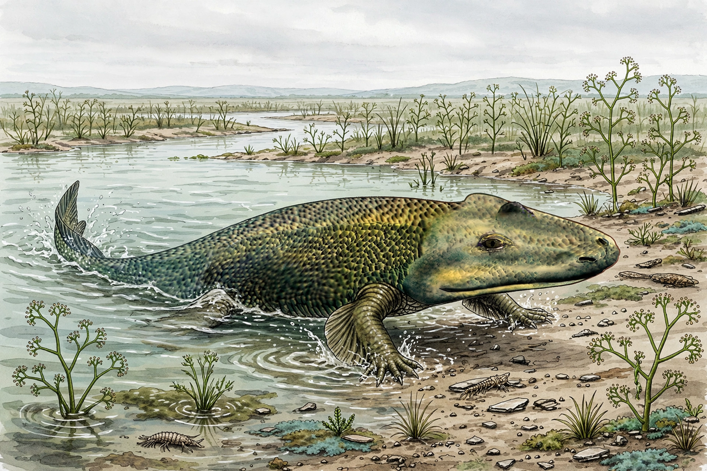

Tiktaalik
From Wikipedia, the free encyclopedia

Tiktaalik is a genus of extinct sarcopterygian (lobe-finned) fish from the Late Devonian Period, about 375 million years ago, regarded as one of the most significant transitional fossils in the evolution of Tetrapods. Discovered in 2004 on Ellesmere Island in Nunavut, Canada, by a team led by Neil Shubin, Edward Daeschler and Farish Jenkins, Tiktaalik roseae combines fish features (scales, fin rays, gills) with tetrapod features (a mobile neck, robust ribs, and fins with wrist-like joints capable of propping the body).
Discovery
The find was prediction fulfilled: the team targeted Devonian river sediments of the right age and environment (the Fram Formation) precisely because the fish–tetrapod gap lay there. Its name, from Inuktitut for a large freshwater fish, honoured the place and its people; the announcement (2006, Nature) made it evolution's poster fossil — the 'fishapod' of headlines.
Significance
Tiktaalik's fin contains the one-bone, two-bone, many-bones pattern of tetrapod limbs, with joints implying push-up capability in shallow water; later finds (including a robust pelvis, 2014) complicate the tidy front-first story, suggesting hind-limb evolution began in water too. Trackways from Poland (395 Ma) predate it — the transitional parade is longer than any single fossil.